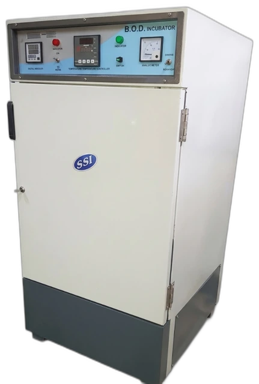
Product imageIncubation & ClimateS.S.I. / 005
B.O.D. Incubator
Accurate, Cool & Warm with Smart Microcontroller
5°C to 50°C RangeStainless Steel ChamberDigital PID Controller
Search the catalogue, narrow by equipment family and compare product details before sending an enquiry.

38 products in the complete catalogue
Compare up to 3 models

Product imageAccurate, Cool & Warm with Smart Microcontroller
Product imageMemmert German Type Design - Indispensable for Every Laboratory
 Product image
Product imageCool, Warm & Humid - Precision Climatic Durability Testing
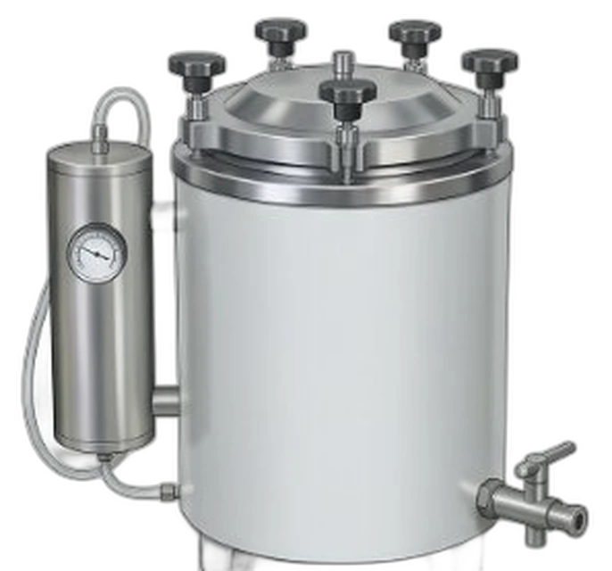
Product imageHigh Pressure Steam Sterilization for Laboratories & Hospitals
 Product image
Product imageHigh Precision Temperature Bath with Motorized Stirrer
 Product image
Product imageHorizontal and vertical clean-air benches with HEPA filtration
 Product image
Product imageToxic Fume & Gas Extraction with Aerodynamic Exhaust Blower
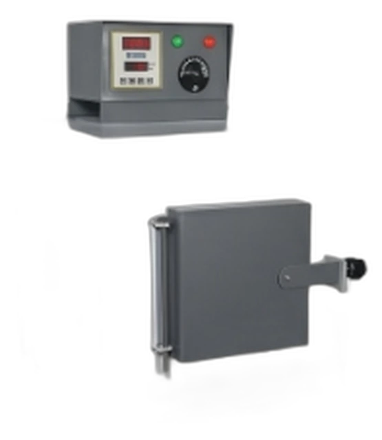
Product imageLight Weight, Red, Hot & Precise - Up to 1200°C High Temperature
 Product image
Product imageGlare-Free Illumination & Digital Touch Counting System
 Product image
Product imageHeavy Cast Iron / Stainless Steel Top Plate with 3-Heat Control
 Product image
Product imageUniform Spherical Flask Heating with Energy Regulator
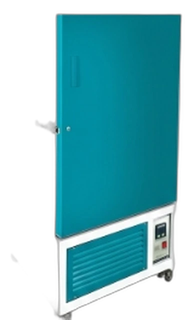
Product imageSub-Zero Preservation Down to -80°C - Vertical & Chest Types
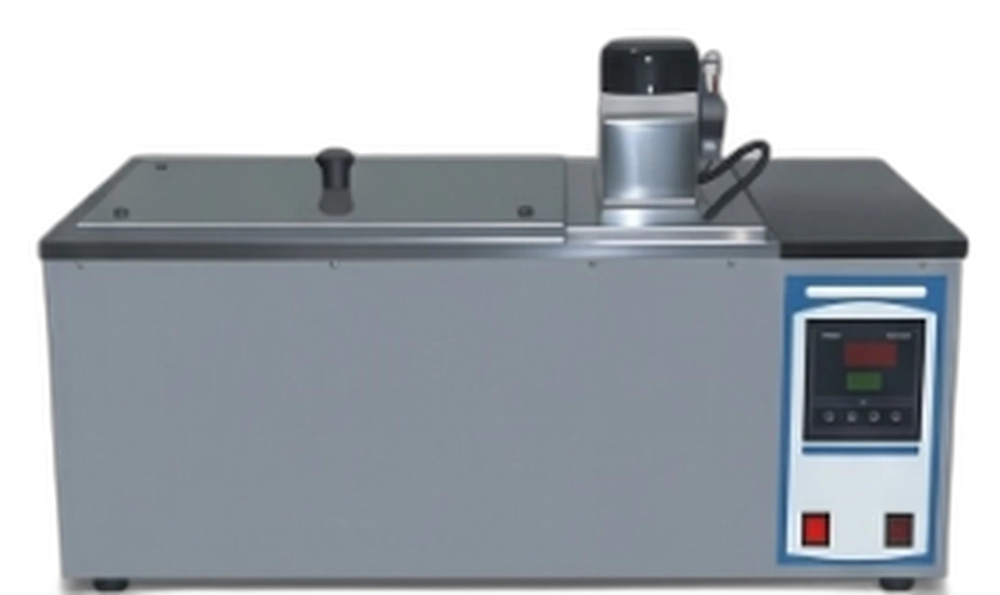
Product imageRefrigerated Low-Temperature Circulating Baths (-30°C to +100°C)
 Product image
Product imageMacro Nitrogen & Crude Protein Determination Apparatus
 Product image
Product imageCompact Benchtop Micro-Digestion Assembly with Fume Duct
 Product image
Product imageMulti-Station Continuous Solvent Extraction Bench
 Product image
Product imagePyrogen-Free Continuous Water Distillation Systems
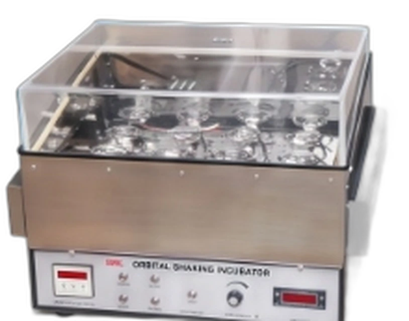
Product imageTable-Top Shaking Incubator with Transparent Acrylic Dome
 Product image
Product imageContinuous Variable Speed Rotary Motion with Lotus Clamps
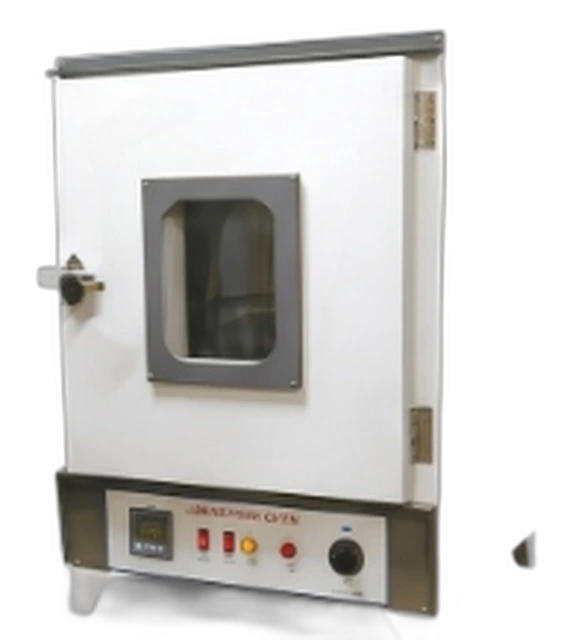
Product imageDouble Walled Precision Microbial Cultivation Chamber
 Product image
Product imageHeavy Cylindrical Stainless Steel Chamber for Low-Pressure Drying
 Product image
Product imageAutomated 24-Hour Tilting Mechanism & Humidity Control
 Product image
Product imageSpace-Saving Dual-Deck Unit: Upper Oven & Lower Incubator
 Product image
Product imageSlanted Test Tube Media Coagulation for TB / Culture Media
 Product image
Product imageThermostatic Boiling Water Bath with Concentric Ring Cover
 Product image
Product imageMulti-Purpose Rectangular Bath for Racks & Evaporation
 Product image
Product imageMicroprocessor Controlled 15-Sample Solid Aluminum Block with Air Condensers
 Product image
Product imageLaboratory Beaker Dyeing Machine for Fabrics, Yarn & Dyestuffs
 Product image
Product imageControlled Temperature & 90-95% RH for Agronomy Research
 Product image
Product imageHeavy Cabinet Dryer for Vaccines, Tablets, Granules & Electronics
 Product image
Product imageDual Wavelength (254 nm & 365 nm) Darkroom TLC Inspection
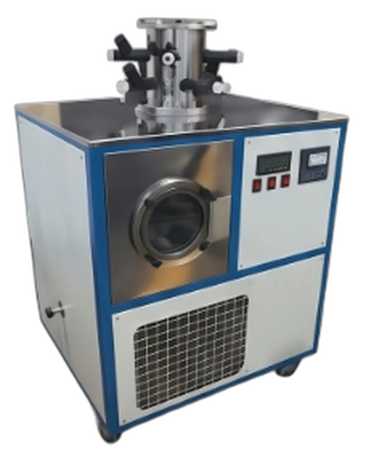
Product imageCell Structure Preservation with Vacuum Drum & Cold Trap
 Product image
Product imageSmooth Stepless Speed Regulation - With or Without Hot Plate
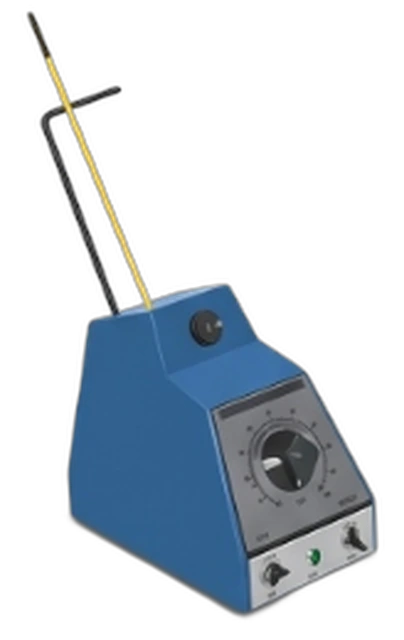
Product imageAccurate Melting Point Determination up to 350°C
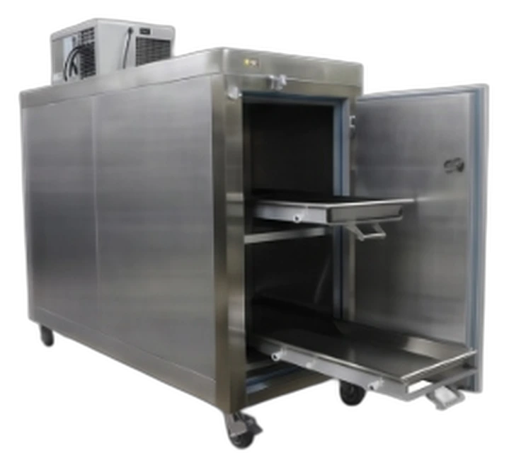
Product imageCadaver Storage Refrigerator (2°C to 50°C) with Movable Trays
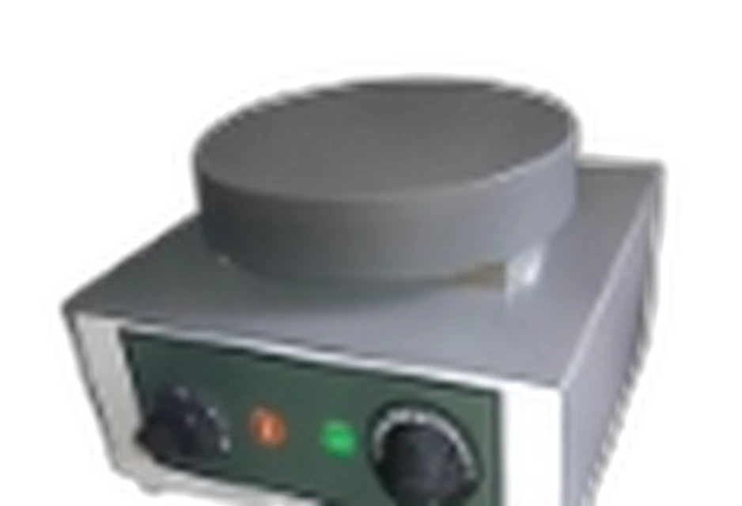
Product imageCircular Cast Iron Heating Plate on Heavy Tripod Base
 Product image
Product imageFlameless Electric Radiative Heat for Inoculation Loops & Test Tubes
 Product image
Product imageUniform Flat Heated Surface for Histology & Cytology Slides
Try a shorter search or choose a different category.
Share your process, capacity, operating range and electrical supply when you enquire.